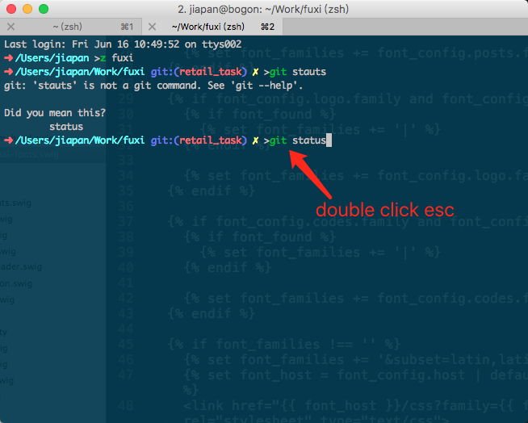
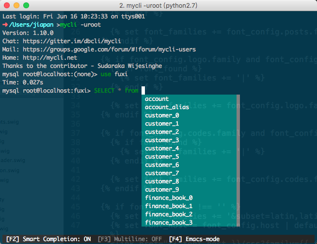
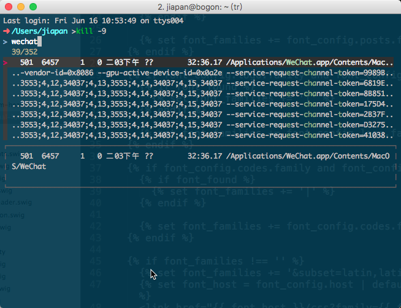

mycli fzf thefuck
今天装了3个命令行下的神器，分别是 mycli fzf thefuck，都是通过 Homebrew 装的。
thefuck 装完后在 .zshrc 的 plugin 中配上了插件，这样的话用起来就更方便了，当输错命令或者需要 root 权限却没加 sudo 时，只需要双击 esc 就可以了。

mycli 是一个支持语法高亮和命令补全 mysql 客户端，类似于 ipython。安装过程比较长，主要是中间安装 Pyhton 2.7.13 占用了很长时间。装完后直接 mycli -uroot 就进入数据库的交互状态了。有一个地方不太习惯，没执行一个命令出来结果后，需要再按一下 q 才能返回交互状态。

fzf 是命令行下模糊搜索工具。通过 brew install fzf 安装完后，还需要执行 /usr/local/opt/fzf/install 安装 shell 扩展，之后 Control+r 时出来的就不是之前那种很简单的历史命令搜索结果了，而是交互性很棒的结果。输入 kill -9 + <TAB> 能通过模糊搜索的方式搜到需要杀掉的进程，再也不用先 ps -ef | grep xxx 找到对应的进程然后在执行 kill 或者 通过管道 + xargs 的方式来杀进程了。

fzf 还有几种用法我感觉没多少用：
1 | cd **<TAB> |